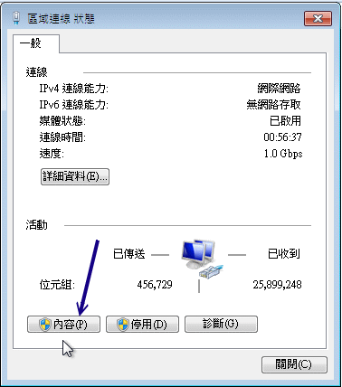
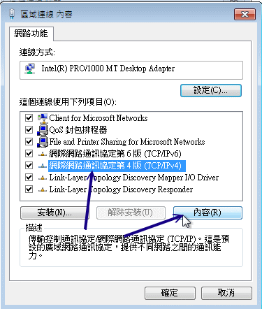
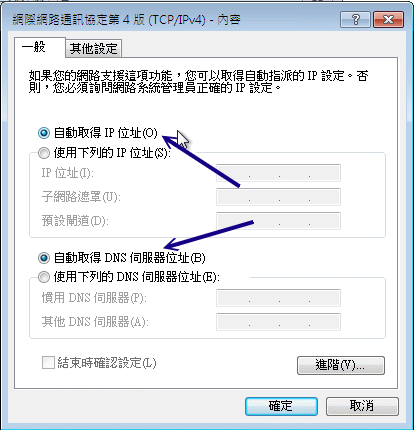

DHCP 的客户端可以是 Windows 也可以是 Linux 呢！鸟哥的网域内使用三部计算机，就如图 3.2-1 所示的那样。
Linux 与 Windows XP 的设定方式已经分别在第四章与第三章谈过了，底下就稍微介绍过而已。至于图示的部分，
我们主要是以 Windows 7 来做介绍啰。
 12.3.1 客户端是 Linux
12.3.1 客户端是 Linux
Linux 的网络参数设定还记得吧？不记得的话就得要打屁股了！在第四章 (4.2.2) 我们谈过自动取得 IP 的方式，设定真的很简单：
[root@clientlinux ~]# vim /etc/sysconfig/network-scripts/ifcfg-eth0
DEVICE=eth0
NM_CONTROLLED=no
ONBOOT=yes
BOOTPROTO=dhcp <==就是他！指定这一个就对了！
[root@clientlinux ~]# /etc/init.d/network restart
|
同时记得要拿掉预设路由的设定喔！改完之后，就将我们的整个网络重新启动即可
(不要使用 ifdown 与 ifup ，因为还有预设路由要设定！)。请注意，如果你是在远程进行这个动作，
你的联机『肯定会挂掉！』，因为网络卡被你关了嘛！呵呵！所以请在本机前面才进行喔！如果执行的结果有找到正确的
DHCP 主机，那么几个档案可能会被更动喔：
# 1. DNS 的 IP 会被更动呢！查阅一下 resolv.conf 先：
[root@clientlinux ~]# cat /etc/resolv.conf
search centos.vbird <==还记得设定过 domain-name 否？
domain centos.vbird <==还记得设定过 domain-name 否？
nameserver 168.95.1.1 <==这就是我们在 dhcpd.conf内的设定值
nameserver 139.175.10.20
# 2. 观察一下路由啦！
[root@clientlinux ~]# route -n
Kernel IP routing table
Destination Gateway Genmask Flags Metric Ref Use Iface
192.168.100.0 0.0.0.0 255.255.255.0 U 0 0 0 eth0
0.0.0.0 192.168.100.254 0.0.0.0 UG 0 0 0 eth0
# 嗯！没错！路由也被正确的捉到了！OK的啦！
# 3. 察看一下客户端的指令吧！
[root@clientlinux ~]# netstat -tlunp | grep dhc
Proto Recv-Q Send-Q Local Address Foreign Address State PID/Program name
udp 0 0 0.0.0.0:68 0.0.0.0:* 1694/dhclient
# 你没看错！确实是有个小程序在监测 DHCP 的联机状态吶！
# 4. 看一看客户端租约所记载的信息吧！
[root@clientlinux ~]# cat /var/lib/dhclient/dhclient*
lease {
interface "eth0";
fixed-address 192.168.100.101; <==取得的 IP 呦！
option subnet-mask 255.255.255.0;
option routers 192.168.100.254;
option dhcp-lease-time 259200;
option dhcp-message-type 5;
option domain-name-servers 168.95.1.1,139.175.10.20;
option dhcp-server-identifier 192.168.100.254;
option domain-name "centos.vbird";
renew 4 2011/07/28 05:01:24; <==下一次预计更新 (renew) 的时间点
rebind 5 2011/07/29 09:06:36;
expire 5 2011/07/29 18:06:36;
}
# 这个档案会记录该适配卡所曾经要求过的 DHCP 信息喔！重要！
# 有没有看出来，他几乎就与你设定的 /etc/dhcp/dhcpd.conf 类似？ ^_^
|
有没有发现其实你的客户端取得的数据都被记载在 /var/lib/dhclient/dhclient*-eth0.leases 里头啊？
如果你有多张网卡，那么每张网卡自己的 DHCP 要求就会被写入到不同档名的档案当中去！
观察该档案就知道你的数据是如何啰！这可也是挺重要的呦！
Tips:
你或许会问说， dhcp 不是都会随机取得 IP 吗？那为什么这部客户端 clientlinux.centos.vbird 每次都能够取得相同的固定 IP 呢？
很简单，因为上头的 dhclient-eth0.leases 里面的 fixed-address 指定了想要固定 IP 的选项。如果 DHCP
服务器的该 IP 没有被用走，也在规定的 range 设定值内，那就会发放给你这个 IP 了。如果你想要不同的 IP 呢？
那就将你想要的 IP 取代上述的设定值啦！
|  |
|
例题：
在文献中谈到，如果区网内有多个 DHCP 服务器 (假设有 DHCP1, DHCP2)，那么每次客户端对整个物理网络区段广播时，DHCP 服务器将是先抢先赢的局面。
但是若第一次取得 DHCP1 服务器的 IP 后，未来重新启动网络，都只会取得 DHCP1 的网络参数，这是为什么？
答：
看到上述的 dhclient-eth0.leases 客户端档案了吗？因为你的主机想要取得上次取得的网络参数，因此将会对 DHCP1 要求网络参数。
如果你想要使用先抢先赢的方式来取得 IP ，或者想要使用 DHCP2 来取得 IP ，那么得要修订或者删除 dhclient-eth0.leases 才行。
|
12.3.2 客户端是 Windows
在 Windows 底下设定 DHCP 协议以取得 IP 实在是很简单喔！例如，你可以到第三章的
3.2.2 小节去瞧瞧如何设定的撷取图示。
我们这里以 Windows 7 作为介绍好了。你可以依据『开始』-->『控制台』-->『检视网络状态及工作』
-->『变更适配卡设定』，在出现的图示中，选择属于你的相关网卡，然后连击两下之后，就开始底下的设定程序：
- 如上所述，点击网络卡设定后，会出现如下图示：

图 12.3-1、局域网络的 Windows 7 系统设定 DHCP 的方式
- 在图 12.3-1 的地方按下箭头所指的『内容』处，就会出现如下画面啰：

图 12.3-2、局域网络的 Windows 7 系统设定 DHCP 的方式
在上面的画面当中，先点选 TCP/IP4 第四版 IP 协议，然后按下『内容』就可以开始来修改网络参数啰！
- 接下来如下图所示，你只要勾选『自动取得 IP 地址』那个项目，然后按下『确定』并离开设定画面，
如此一来 Windows 就会开始自动取得 IP 的工作了。

图 12.3-3、局域网络的 Windows 7 系统设定 DHCP 的方式
- 那你如何确认你的 IP 已经被顺利的取得呢？如果是在早期的 Windows 95 ，你可以使用一个名为『 winipcfg 』
来观察你的 IP 设定。不过在 windows 2000 以后，你可能需要使用命令提示字符来观察才行。你可以使用：
『开始』-->『所有程序』-->『附属应用程序』-->『命令提示字符』来取出终端机，然后这样处理看看：
C:\Users\win7> ipconfig /all
....(前面省略)....
以太网络卡 区域联机:
联机特定 DNS 后缀 . . . . . . . . : centos.vbird
描述 . . . . . . . . . . . . . . .: Intel(R) PRO/1000 MT Desktop Adapter
实体地址 . . . . . . . . . . . . .: 08-00-27-11-EB-C2
DHCP 已启用 . . . . . . . . . . . : 是
自动设定启用 . . . . . . . . . . .: 是
链接-本机 IPv6 地址 . . . . . . . : fe80::ec92:b907:bc2a:a5fa%11(偏好选项)
IPv4 地址 . . . . . . . . . . . . : 192.168.100.30(偏好选项) <==这是取得的IP
子网掩码 . . . . . . . . . . . .: 255.255.255.0
租用取得 . . . . . . . . . . . . .: 2011年7月27日 上午 11:59:18 <==这是租约
租用到期 . . . . . . . . . . . . .: 2011年7月30日 上午 11:59:18
预设网关 . . . . . . . . . . . . .: 192.168.100.254
DHCP 服务器 . . . . . . . . . . . : 192.168.100.254 <==这一部 DHCP 服务器
DNS 服务器 . . . . . . . . . . . .: 168.95.1.1 <==取得的 DNS
139.175.10.20
NetBIOS over Tcpip . . . . . . . .: 启用
C:\Users\win7> ipconfig /renew
# 这样可以立即要求更新 IP 信息喔！
|
这样就 OK 的啦！简单吧！